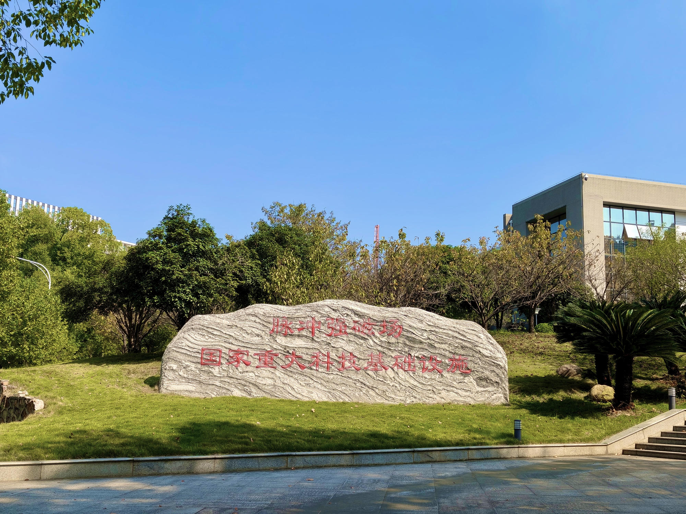
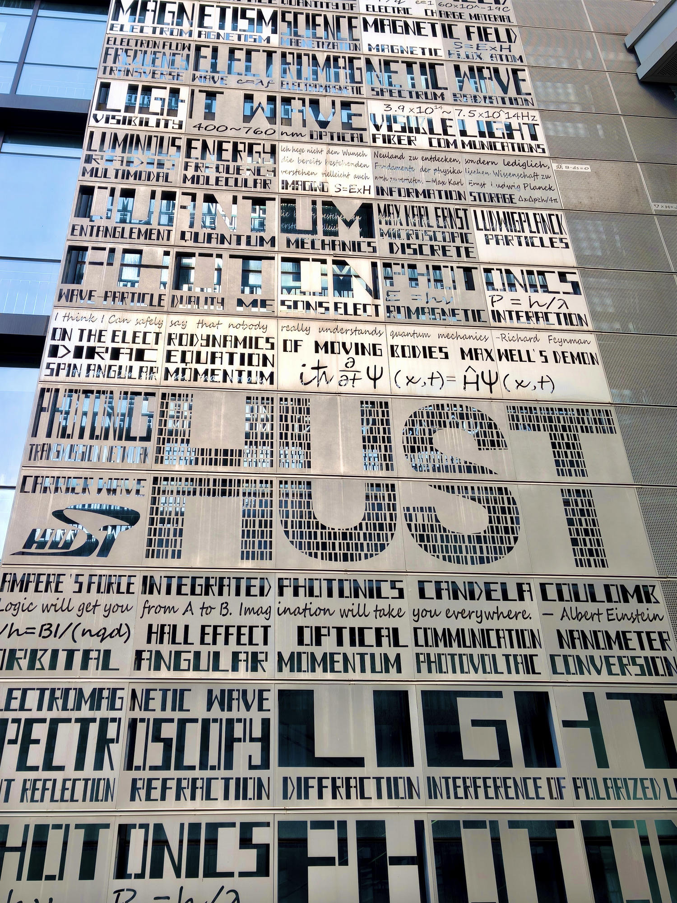
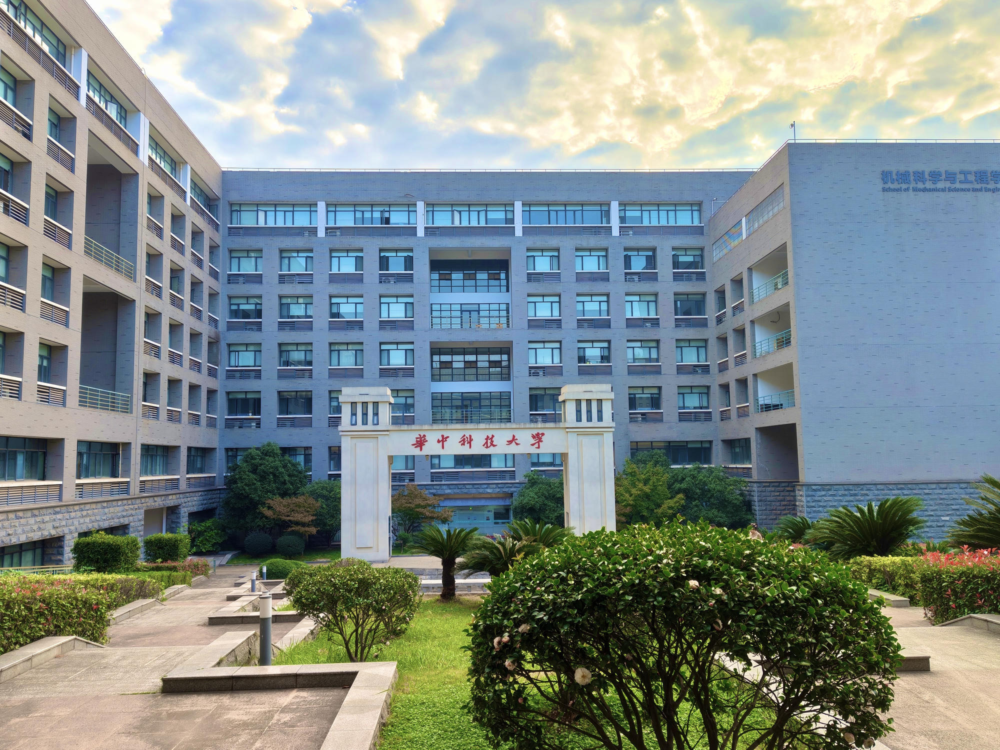
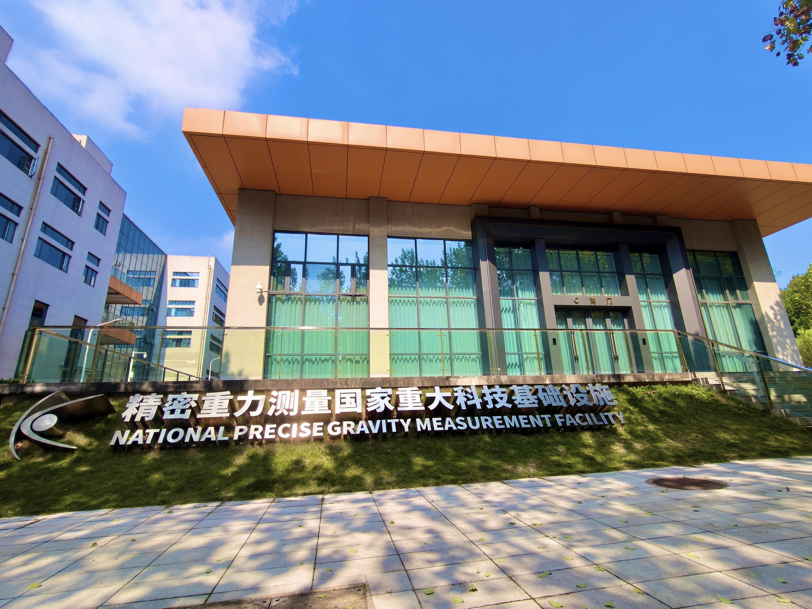
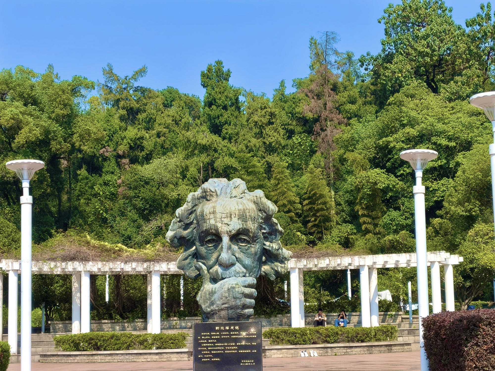
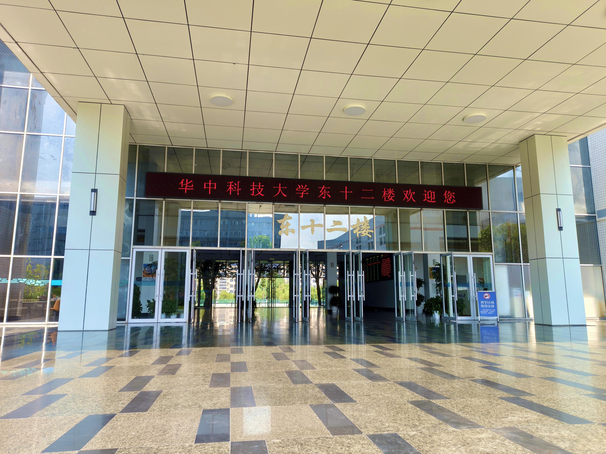
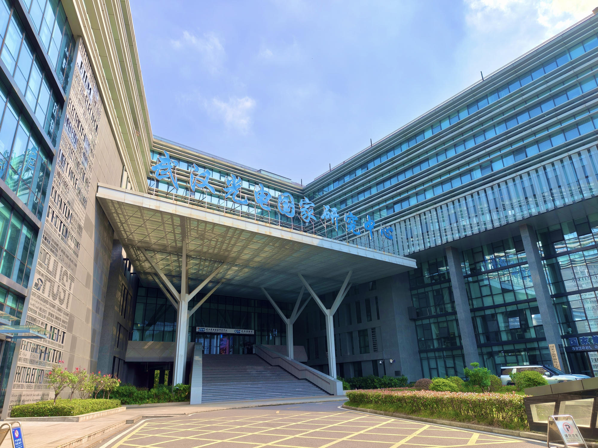
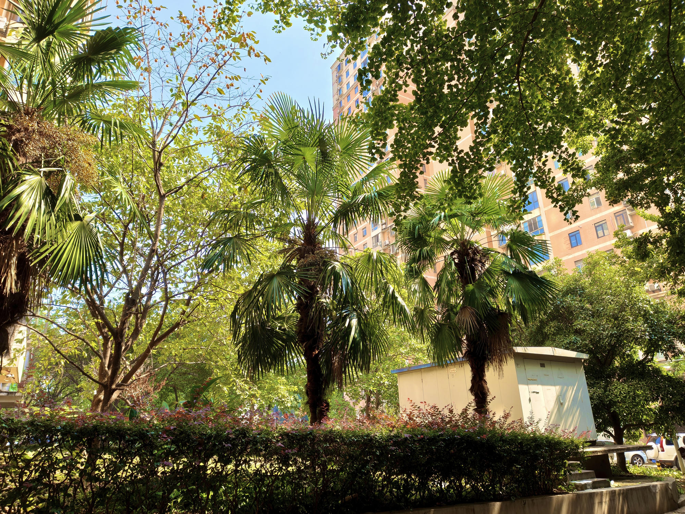

从林荫道出发
听听风声，让思绪从课程和待办里暂时抽离。
01 / CAMPUS VIEWS
校园不只是从宿舍到教室的路线。偶尔放慢脚步，看看科学建筑、树影和熟悉的地标，熟悉的日常也会有新的风景。

A SMALL ROUTE
不赶时间，也不需要目的地。试着沿着熟悉的校园小路慢慢走。
听听风声，让思绪从课程和待办里暂时抽离。
看看熟悉的建筑、纪念石与雕塑，发现校园里的科学气息。
看看天色变化，为一天留个轻盈的结尾。
爱护绿地与公共设施，把垃圾带到合适的地方，也给骑行、步行和锻炼的同学留出安全空间。
CAMPUS PHOTO JOURNAL






